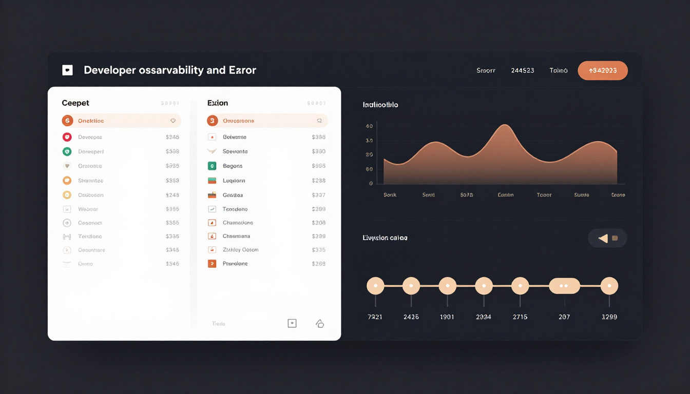
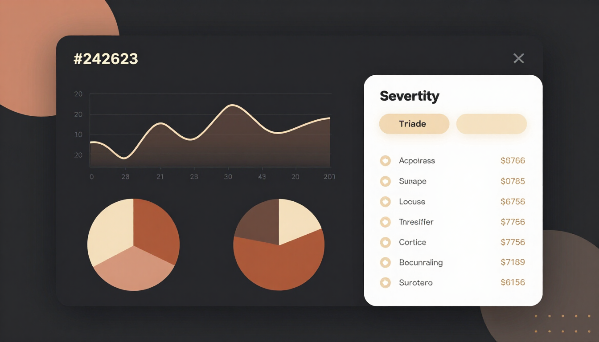
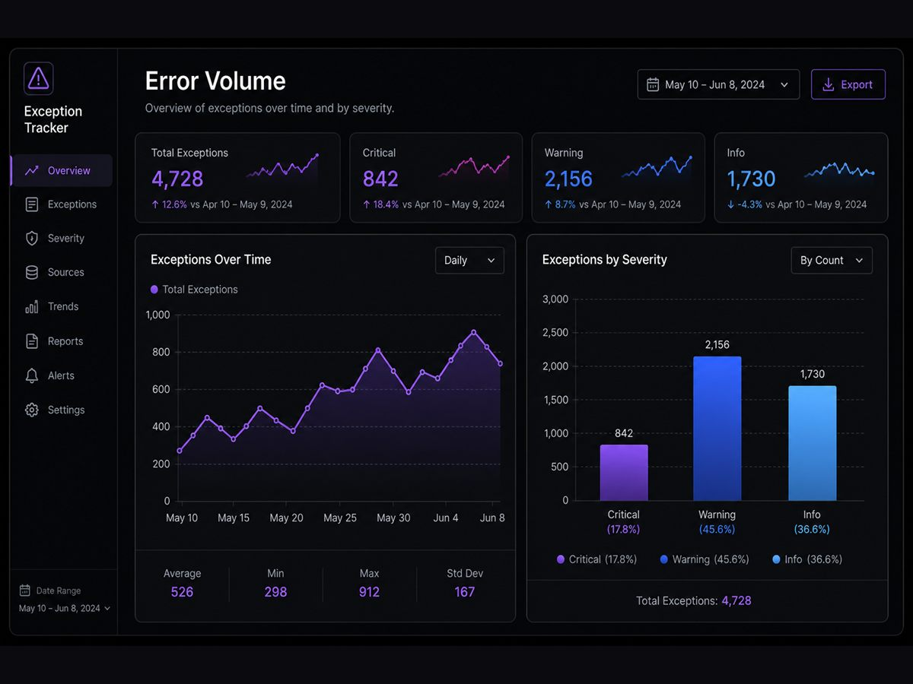
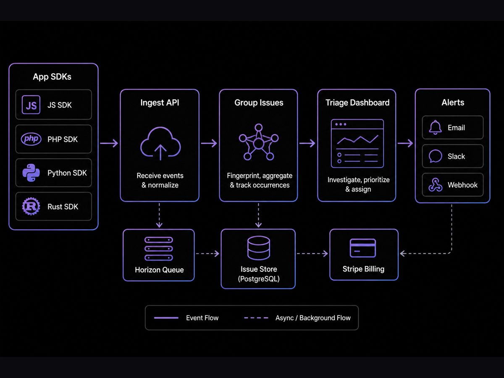
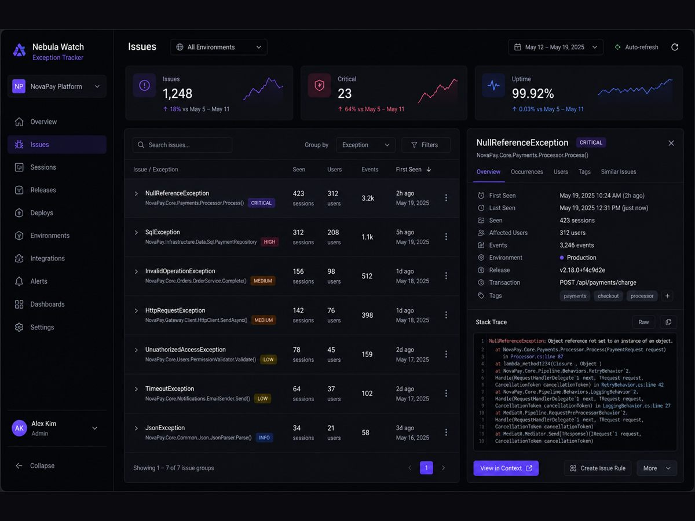

Exception Tracker.
Production error triage, telemetry and performance monitoring SaaS. Built to ingest high-frequency exception streams, collapse noisy stack traces into actionable issues, and provide integrated uptime, OTLP tracing, and session replay.

Illustrative Exception Tracker triage and telemetry dashboard — representative sample data.Observability built for engineering teams who demand precision.
Exception Tracker is an independent multi-tenant observability and error triage platform designed for software engineering teams and DevOps organizations. Rather than requiring disjointed subscriptions for crash analytics, synthetic uptime monitors, tracing, and user replay sessions, Exception Tracker brings these signals together into a single, cohesive developer workspace.
The platform accepts high-volume exception events from multiple client languages, strips sensitive environment variables, groups identical crashes using stack-trace fingerprinting algorithms, and dispatches contextual alerts to Slack, webhooks, and email.
Full Architecture & Implementation
As lead architect and developer, I designed the ingest protocol, database models, asynchronous queues, client libraries, and customer web interface.
- Engineered a high-throughput ingestion pipeline that handles batched error payloads, validates API keys, and offloads heavy processing to Redis workers.
- Designed and published eight client SDKs and native MVPs (JavaScript, Node.js, PHP, Laravel package, Python, Rust, Swift for iOS, and Kotlin for Android).
- Constructed strict multi-tenant data boundaries ensuring absolute project, organization, team, and billing segregation.
- Built monitoring capabilities: HTTP synthetic ping monitors, background cron heartbeat verification, database query performance profiling, and DOM session replay.
- Implemented Stripe usage-based monetization, quota enforcement middleware, and customer self-service billing portals.
High-Concurrency Ingestion & Grouping
- Intelligent Stack-Trace Deduplication: High-traffic applications can fire millions of duplicate errors during an outage. An MD5/SHA256 frame-normalization fingerprinting engine collapses repeated exceptions into unified issues while preserving chronological occurrence logs.
- Zero-Latency Ingest Architecture: Client applications cannot afford slow telemetry calls. Laravel controllers immediately push incoming event envelopes into Redis queues via Horizon workers, responding to callers in under 15ms.
- Unified Observability Surface: Integrating crash logs, OpenTelemetry (OTLP) distributed traces, uptime checks, and session replays into one intuitive interface without overwhelming engineers with Datadog-level configuration complexity.
Ingestion Pipeline to Triage Action.
SDK clients push telemetry through rate-limited ingress endpoints into Redis queues; Horizon workers parse stack frames, deduplicate issues into PostgreSQL, and fire rule-based alerts.
Telemetry Lifecycle: ExceptionCaptureService ingests events, resolves parent issues, refreshes occurrence metrics, and triggers alert policies.
Observability Capability Map
Ingestion Engine & Worker Queues
Designed to scale horizontally as event volume spikes:
- Laravel Horizon & Redis: Dedicated priority queues ensuring critical enterprise alerts are dispatched immediately even during mass error storms.
- PostgreSQL JSONB Storage: Flexible document-style storage for rich exception context: local variable bindings, headers, breadcrumbs, and user metadata.
- API Authentication: High-speed project token validation utilizing cached Sanctum tokens to prevent database lookup bottlenecks.
Multi-Language Client Libraries
Engineered uniform SDK abstractions across modern developer environments:
- Web & Node: Zero-dependency browser package with auto-unhandled-rejection interceptors and lightweight payload compression.
- PHP & Laravel: Native service provider catching Laravel exceptions with automated context enhancement (route, authenticated user, query count).
- Python & Rust: Asynchronous thread-safe error listeners with custom back-off retry logic.
- Mobile Clients: Swift and Kotlin modules with offline queue caching when mobile devices lose cellular connectivity.
Interfaces Built for Fast Issue Resolution.




Technology & Tooling.
A full-stack, enterprise-ready observability prototype demonstrating production-scale systems architecture, high-throughput ingest queues, reliable deduplication, and developer-friendly triage interfaces. Actively maintained as an independent engineering project.